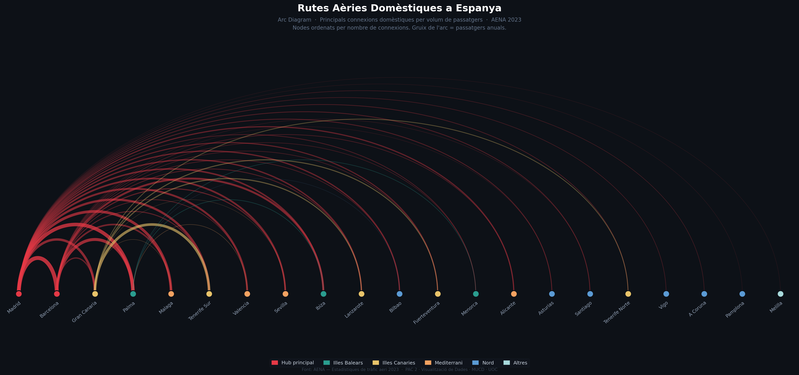

Arc Diagram — Principals connexions de vols domèstics per volum de passatgers (2023)
Els nodes estan ordenats per nombre de connexions. El gruix de cada arc codifica el nombre de passatgers anuals.
Els colors identifiquen el grup geogràfic de l'aeroport origen.
